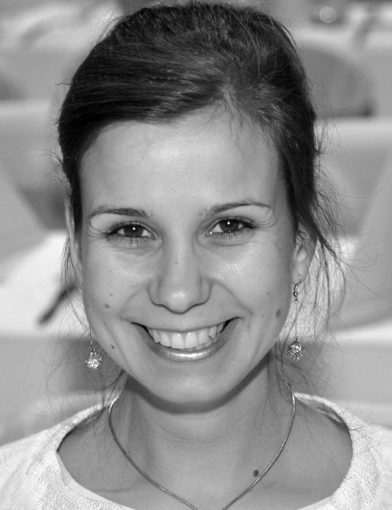

Aliz Totivan
Structural civil engineer
Want to be a software engineer
Work experience
- GYSEV ZRT. - project expert - 4,5 years
- project leader of buildings
- prepearing the maintenance of the constructions
- inviting of resurrection and investment application
- Roxdecor Kft. - planning, technician leader - 1 year
- planning of the installation of stores
- engineering preposition
- technician lead in the field
Software skills
- AutoCad, SofiCad, AxisVM
- MS Office, Adobe Acrobat
- Illustrator, Cmder, Atom
Achievements
- 2005 Pro Auditoribus award
- 2008 and 2009 Spaghetti Bridge World Contest,
Kanada - 2. 1. place Worldrekord ( 443,58 kg )
- 2014 Headmaster praise at GYSEV Zrt.